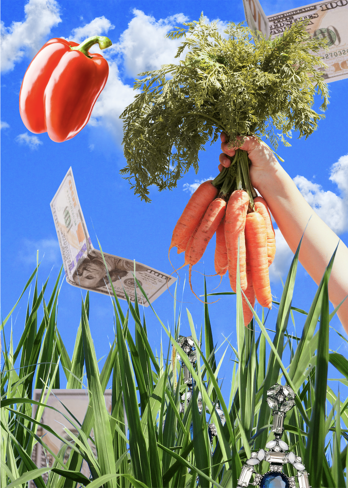
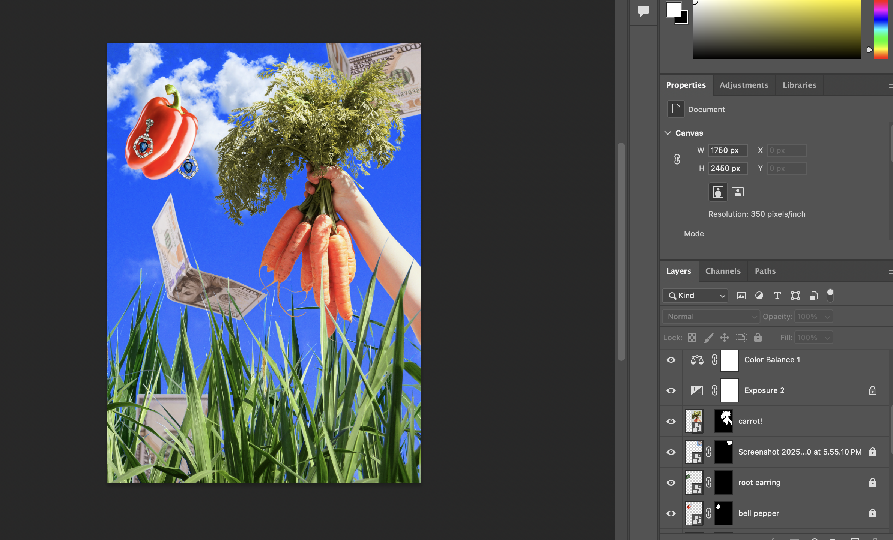
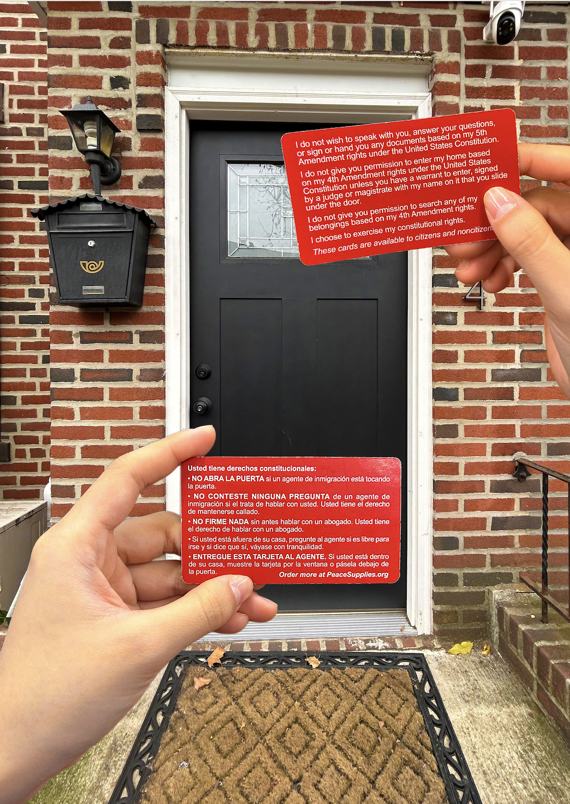
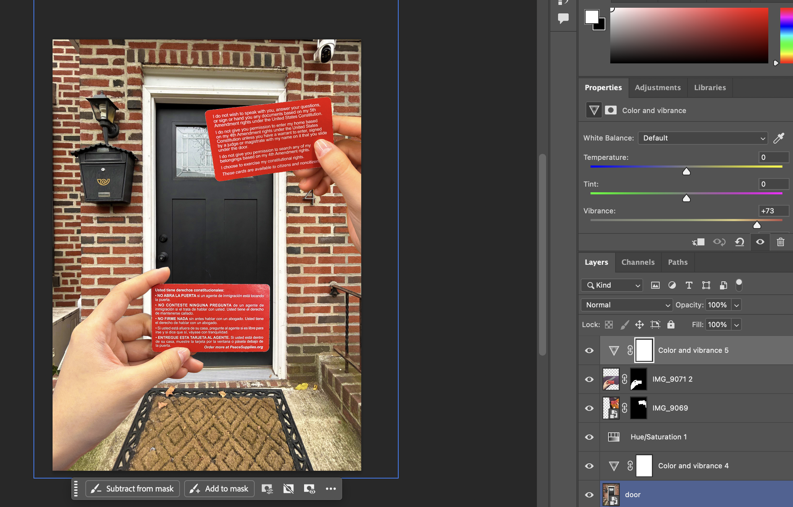

For this photoontage, I wanted to address the issue of food luxury; I took inspiration from the "Have a Foodie Holiday" theme by the luxury brand Barneys New York in 2010. This theme pictured models wearing food (e.g.: kale, crab, etc.) on magazines, and figures of icons in the food industry (e.g.: Anthony Bourdain, Martha Stewart, Guy Fieri, etc.) in their store windows. When looking at the magazine photos in particular, I felt that despite this campaign being in 2010, the issue of food access for many families especially in NYC, is still prevalent today. I wasn't entirely sure how to execute this, so I admit that my final product isn't exactly what I had in mind. I wanted to combine fresh produce and items such as money and luxury jewelry in one frame, some appearing to grow out of the grass. This was so that I could best depict the idea that fresh/organic food has become extremely difficult for the working class to access on a regular basis.
In all honesty, I had a difficult time blending, simply due to my computer/software acting out. Despite this, I tried to adjiust the saturation levels of each element, as everything (in theory) was so absurd altogether.Additionally, I copied and pasted the layer of grass onto a different layer to make it appear as if the carrots being pulled out from the ground. I wish I had added some shadows or something like dirt to make this photomontage look more realistic. I may go back to this in the future to fix this, as the photomontage itself looks quite flat without proper highlights and shadows.


I aimed to make my second photomontage about the recent detainment of immigrants/non-American citizens. I especially wanted to address this, as this is a topic that is deeply personal to me and keeps me on edge. The concept I was aiming for with this was "The American Dream", as it is a fantasy that many people/families have when coming to the United States. The white picket fence, a better future for children, and the possibility of a better life overall. However, the current political climate, particularly regarding the ICE deportations, have crushed this dream for immigrants—ripping families apart, and taking away people's rights. My initial idea for this was to have a red card slipped under a door, acting as a front door. However, I wasn't able to find any images online that fit what I wanted, so I ended up using a photo of my front door, as well as photos of me holding both sides of a red card (ENG/ESP) to convey the message as best as I could.
Because this ended up so different from what I had initially planned, I ended up utilizing the "remove background" tool more often than intended (though it was very helpful). A blending tool I used for this one was adjusting the saturation levels again for each indiviual picture. The challenge for me here was that the front door photo was taken outdoors (of course), while the red card photos were taken indoors.
HOME